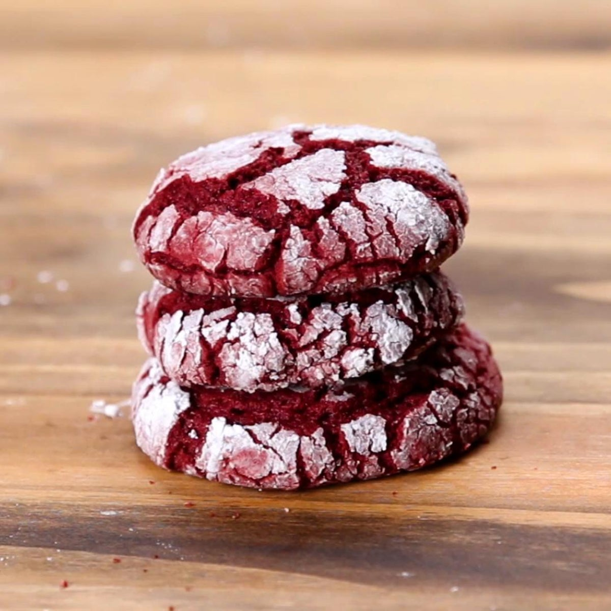

Red Velvet Cookies
Ingredients:
1 ¾ cups all-purpose flour
½ cup unsalted butter room temperature
⅔ cup granulated sugar
¼ cup brown sugar
½ teaspoon salt
3 tablespoons cocoa powder
1 ½ teaspoon red food coloring (optional)
2 teaspoons vanilla extract
4 tablespoons greek yogurt
Steps:
1. Heat the flour and leave to cool.
2. Beat the butter, sugar, cocoa powder, salt, food coloring, vanilla extract, and heavy cream together until fluffy and well-combined.
3. Add the flour and beat until just combined (over mixing will form a lot of gluten, turning your cookie dough into an unpleasant texture).
4. Allow the dough to rest for an hour in the refrigerator so the flour may hydrate. If you taste it immediately after mixing it won't taste right. It needs to rest.
Go Back